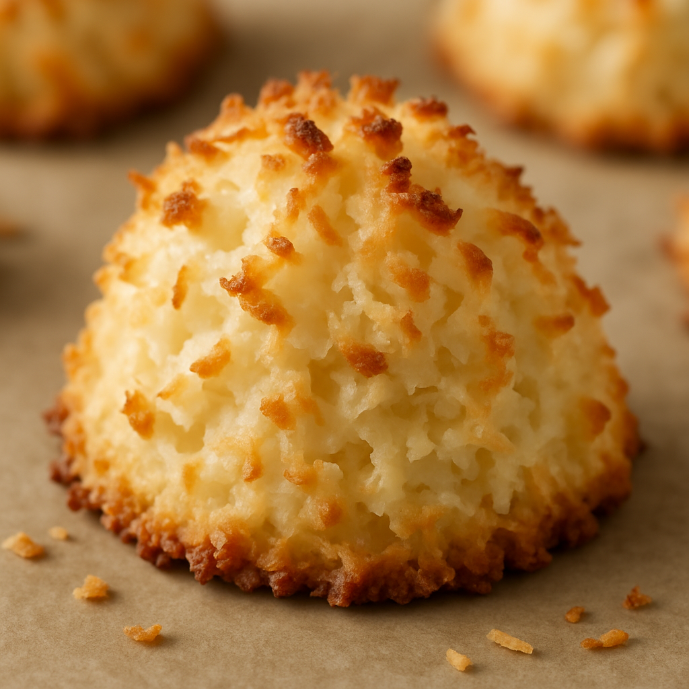

Coconut Macaroons Recipe
Home

Coconut Macaroon Cookie
Coconut macaroons are a simple yet tasty cookie. A perfect balance of sweetness
and coconut. A great cookie to bring to family gatherings and parties.
I found this recipe last summer while searching for simple cookies to make.
It is so simple and yet the results are absolutely delicious.
Ingredients
- 14oz sweetened shredded coconut
- 14oz sweetened condensed milk
- 1tsp pure vanilla extract
- 2 extra-large egg whites, at room temperature
- 1/4tsp kosher salt
Instructions
- Preheat the oven to 325 degrees F.
- Combine the coconut, condensed milk, and vanilla in a large bowl.
- Whip thee egg whites and salt on high speed in the bowl of an
electric mixer fitted with the whisk attachment until they make
medium-firm peaks.
- Carefully fold the egg whites into the coconut mixture.
- Drop the batter onto sheet pans lined with parchment paper using
either a 1 3/4in diameter ice cream scoop, or 2 teaspoons.
- Bake for 25 to 30 minutes, until golden brown.
- Cool and serve.